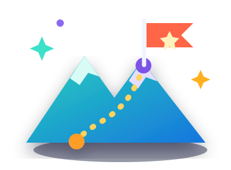

Points
0Leadership Journey
Your leadership story is unfolding.
Every presentation, act of service, and brave new step becomes part of the leader you are growing into.
Leadership LevelExplorerCurrent ChapterPractice Session

Your Journey So Far
Real steps. Meaningful growth.
These milestones come directly from your approved YUVA Club activity.
Tokens
0Attendance
0 sessionsVolunteer Hours
0 hoursPresentations
0Leadership Path
Explorer
Beginning the leadership journey.
Approved RankExplorer
Rank StatusApproved
Eligible RankExplorer
Next RankSpeaker
Requirements for Speaker
Approved participation requirements will appear from the existing rank definition.
Achievement
Certificate of Participation
Your current leadership certificate.
Certificate StatusNot Ready
Certificate available after approvalYour Current Chapter
Follow the challenge path
Your approved challenge stage anchors this part of your journey.
Challenge Journey
Practice Session
The Global Youth Speaking & Leadership Challenge
Topic Selection
Practice Session
Presentation
Review
Finalist
Award
Milestones
Recognition earned along the way
Only badges earned through your real participation appear here.
Your first badge is waiting
Your first badge will appear as you participate and complete real milestones.